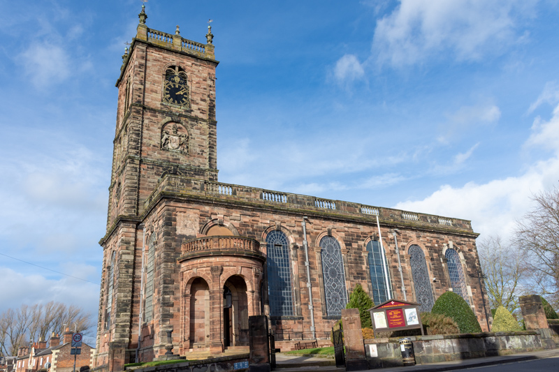
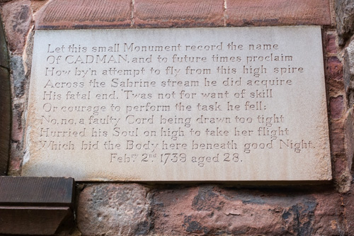
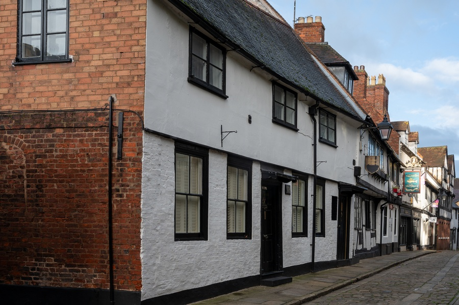
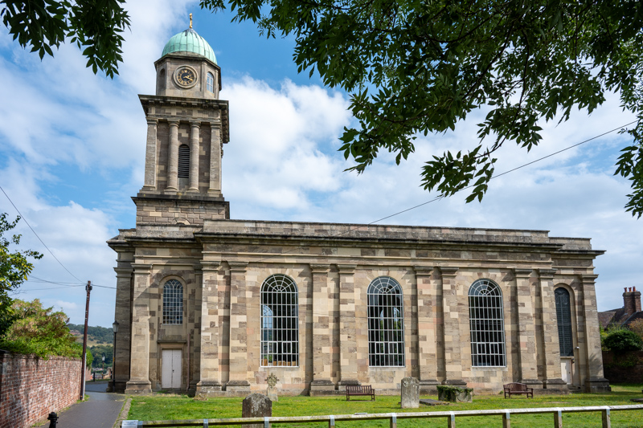
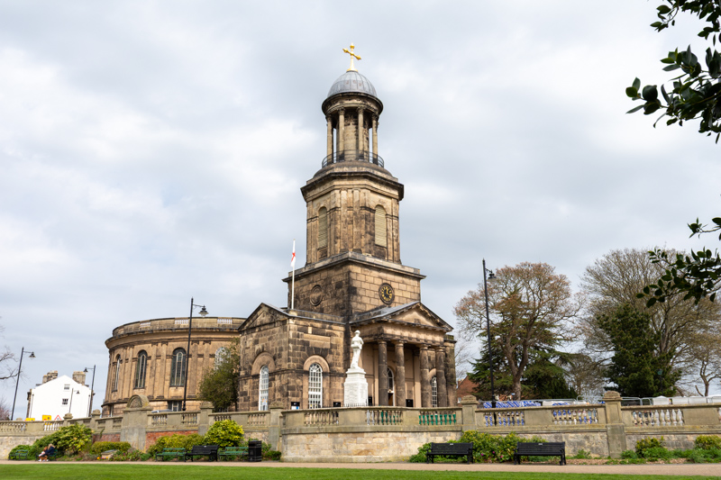
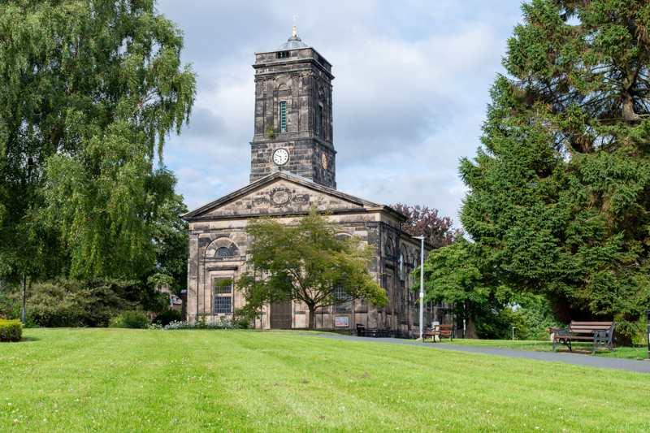
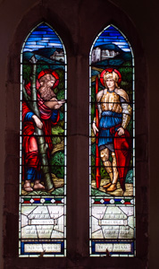

7. Georgian Britain (1714 AD to 1837 AD)

Although a period of relative stability for the Anglican church, there was a shift towards practical Christianity and good works...this period saw the rise of Methodism and other evangelical movements...
The Hanover kings were Lutheran and accepted the Church of England as part of becoming the English monarch. Although the oversight of both the Lutheran church in Hanover and the Anglican Church of England, and the presence of Lutheran preachers at court caused some consternation among Anglican subjects.
- George I - 1714 AD to 1727 AD
- George II - 1727 AD to 1760 AD
- George III - 1760 AD to 1820 AD
- George IV - 1820 AD to 1830 AD
- William IV - 1830 AD to 1837 AD
In Georgian Britain, the Church of England was a government-controlled institution with significant social and political power, with strict requirements meaning only Anglicans could hold office or attend universities like Oxford and Cambridge. While the clergy was often seen as a respected profession for younger sons of the gentry, religious life was characterized by a shift towards "Latitudinarianism" - an emphasis on practical Christianity and good works - which occurred alongside the rise of Methodism and other evangelical movements. The Anglican Church occupied the predominant ground and those considered “Dissenters,” a general term that included non-conformist Protestants, Presbyterians (identified with the Scots), Baptists, Jews, Roman Catholics and Quakers.
Incentives
There were many incentives to being a part of the Church of England because it was government controlled: Only Anglicans could attend Oxford or receive degrees from Cambridge. Except for the Jews and Quakers (the latter obtaining freedom of worship in 1813), all marriages and baptisms had to take place in the Anglican Church and the ceremony had to be conducted by an Anglican minister. All citizens, no matter their faith, paid taxes to maintain the parish churches, and non-Anglicans were prevented from taking many government and military posts.
Evangelical Growth
Although, the Church of England remained dominan, it had a growing evangelical, revivalist faction, the "Low Church". The Protestants moved toward the Methodist and Evangelical belief in a personal God and the need for salvation. The Roman Catholics, governed by the Pope in Rome, though discriminated against, were too strong to be suppressed and persisted, eventually regaining the ability to become Members of Parliament and hold public office with The Catholic Emancipation Act of 1829.
The evangelical movement inside and outside the Church of England gained strength throughout the Georgian and Victorian eras. The movement challenged the traditional religious sensibility that emphasised a code of honour for the upper class, and suitable behaviour for everyone else, together with faithful observances of rituals. John Wesley (1703–1791) and his followers preached revivalist religion, trying to convert individuals to a personal relationship with Christ through Bible reading, regular prayer, and especially the revival experience. Wesley himself preached 52,000 times, calling on men and women to "redeem the time" and save their souls. Wesley always operated inside the Church of England, but at his death, his followers set up outside institutions that became the Methodist Church. It stood alongside the traditional Nonconformist churches, Presbyterians, Congregationalist, Baptists, Unitarians, and Quakers. The Nonconformist churches, however, were less influenced by revivalism.

Church Building - Georgian
Several new churches were built in Shropshire in the 18th Century, these churches were built for Protestant worship (which puts more emphasis on the preaching of the Word and less on the sacraments and so chancels were made smaller) - “preaching box” style churches. During this period, many of the village churches were built of brick with stone dressings. Some existing churches were encased in brick, notable examples being Quatt and Moreton Say (but the medieval interiors were retained). In some cases a Georgian tower was added to a medieval church, notable examples being Chelmarsh and Westbury. In some cases a Georgian nave was added to an existing chancel or tower, notable examples are Shrewsbury St Alkmund and St Julian, Kinnerley and Stirchley.
The majority of the churches were built in the north of the county, reflecting where the population was increasing.
Georgian architecture is characterised by proportion and balance, it was based on the symmetry and proportion of the classical architecture of Greece and Rome.
Anglican churches that were built in the Georgian era were designed internally to allow maximum audibility, and visibility, for preaching, so the main nave was generally wider and shorter than in medieval plans, and often there were no side-aisles. Galleries were also common in new churches. The external appearance generally retained the familiar signifiers of a Gothic church, with a tower or spire, a large west front with one or more doors, and very large windows along the nave, but all with any ornament drawn from the classical vocabulary.
Where funds permitted, a classical temple portico with columns and a pediment might be used at the west front. Interior decoration was generally simple or restrained; however, walls often became lined with plaques and monuments to the more prosperous members of the congregation.
Some example of Georgian churches in Shropshire are: St Alkmund, Whitchurch, St Catherine, Eyton-upon-the-Weald-Moors, St Laurence, Preston-upon-the-Weald-Moors.
Georgian architecture was unpopular in the 19th Century, consequently the Victorian restorers often drastically altered the character of the buildings. Also, chancels were often extended or rebuilt after the High-Church revival to reflect the increased emphasis on the 'correct' administration of the sacraments.

St Alkmund, Whitchurch

St Catherine, Eyton-upon-the-Weald-Moors

St Laurence, Preston-upon-the-Weald-Moors
1729 AD (13th April)
Thomas Percy was born 13th April 1729 in Bridgnorth. He became Bishop of Dromore, but his greatest contribution is considered to be his Reliques of Ancient English Poetry, published in 1765.
Wikipedia - Reliques of Ancient English Poetry
1739 AD (2nd February)
Robert Cadman was an 18th Century steeplejack and ropeslider, between 1732 and 1739 he performed feats of daring by sliding or flying down a rope from St Mary's Church, Shrewsbury to the Gay Meadow across the River Severn. Cadman walked some 250 metres up the rope that connected the 68-metre-high spire of St Mary's Church with an anchor in the ground in Gay Meadow. Climbing up the rope across the River Severn, he performed tricks on the way. When at the top, near the pinnacle of the spire, he donned a wooden breastplate with a central groove and hurtled to earth along the rope.
On 2nd February 1739 he fell to his death when the rope broke. He was buried in St Mary's Church.

St Mary, Shrewsbury - Robert Cadman
1757 AD
In 1757 John Fletcher was ordained as deacon (6 March 1757) and priest (13 March 1757) in the Church of England, after preaching his first sermon at Atcham having being appointed curate to the Rev. Rowland Chambre in the parish of Madeley, Shropshire. Fletcher was of French Huguenot stock, and became one of Methodism's first great theologians. John Wesley had chosen Fletcher to lead the Methodist movement upon Wesley's passing, but Fletcher died prior to Wesley.

Industrial Revolution
1760 saw the start of the Industrial Revolution.
1761 AD (16th March)
John Wesley preached his first sermon in Shrewsbury on March 16th 1761 at 1 Fish Street. Wesley was an English cleric, theologian, and evangelist who was a leader of a revival movement within the Church of England known as Methodism. The societies he founded became the dominant form of the independent Methodist movement that continues to this day.

Fish St, Shrewsbury
Iron Bridge
In 1779 the Iron Bridge is built.
1783 AD (21st April)
Reginald Heber is born, he served as rector of Hodnet from 1807 to 1823.
Reference: Wikipedia - Reginald Heber
Attingham Park
In 1785 Attingham Park is built.
Thomas Telford
Telford became Surveyor of Public Works in Shropshire in 1787.
Telford was responsible for designing two churches in Shropshire - Madeley and Bridgnorth. Bridgnorth is unusual in that it is aligned north-south to provide a better aesthetic from the street.

St Michael, Madeley

St Mary Magdalene, Bridgnorth
1788 AD (9th July)
On 9th July 1788 St Chad's Church, Shrewsbury collapsed.
Church Building - The Greek Revival (c. 1790 - 1836)
The Greek Revival was championed in England by two young architects following a visit to Athens (then part of the Ottoman empire) for the study of Greek architecture. The enthusiasm for Greek style architecture was quite short lived and was soon replaced for renewed interest in the Gothic.
A small number of churches were build during this period in Shropshire, the most notable ones being All Saints, Wellington, St Chad, Shrewsbury, St Mary Magdalene, Bridgnorth and St Michael, Madeley (the former two by James Stuart, one of the young architects who visited Athens, and the latter two by Thomas Telford). Other churches built during this period were: Malinslee, Frodesley, Trefonen, Hopton Wafers, Shrewsbury (St Michael), Woore, Wrockwardine Wood, Tilstock and Whitchurch (St Catherine).

St Chad, Shrewsbury

All Saints, Wellington
1809 AD (15th November)
Charles Darwin is baptised at St Chads church on 15th November 1809.
1815 AD
David Evans partners with John Betton, a Shrewsbury glazier.
Reference: David Evans, The Forgotten Pioneer

St Andrew, Wroxeter - Stained Glass by David Evans
1817 AD
Thomas Rickman's influential book, An Attempt to Discriminate the Styles of English Architecture, was first published in 1817, establishing the chronological classifications (Norman, Early English, Decorated, Perpendicular) still used today for English Gothic architecture, making it a cornerstone of the Gothic Revival. The classifications in the book are (the dates should be treated with caution):
- Romanesque or Norman 1066-1200
- Gothic Early English 1200-1300
- Decorated 1300-1350
- Perpendicular 1350-1550

An Attempt to Discriminate the Styles of English Architecture
1818 AD (30th May)
The Church Building Act 1818 is given royal assent. The 1818 act supplied a grant of money and established the Church Building Commission to direct its use. The First Parliamentary Grant for churches amounted to £1 million.
1824 AD (24th June)
The Church Building Act 1824 is given royal assent. The 1824 act made a further grant of money of £500,000.
Church Building - The Gothic Revival
The Gothic Revival was actually underway before Queen Victoria's reign, the first church to be built under this movement was St Alkmund, Shrewsbury (the church was demolished and rebuilt, but the existing tower and spire retained). Only two other churches were build in Shropshire in the 19th Century prior to the Victorian era, one is now closed and the other is St George, Pontesbury (the tower and nave were rebuilt in the Early English style following the collapse of the original tower).
In the early 19th Century the Church was at a low ebb, there was social unrest and dissent, brought on the Napoleonic Wars and the industrialisation that was happening at the time. The Methodists moved away from the Church of England and established their own organisation. As a result in 1818, the Church founded the Church Building Society and in the same year Parliament passed the Church Building Act. This provided significant money for new churches to be built. At the same time, architects were looking back at medieval Gothic architecture, and under Augustus Pugin, a revolution in this style was established.

St George, Pontesbury
1828 AD (9th May)
The Sacramental Test Act 1828 is given royal assent. The act repealed the requirement for public office holders to receive communion in the Church of England as a qualification. Passed in the United Kingdom, the act replaced this test with a declaration that an office holder would not "injure or weaken the Church of England". It abolished the long-standing Test and Corporation Acts of the 1660s, which had historically restricted access to public roles to those who were members of the Anglican Church.
1828 AD
Rev William Gorsuch Rowland was persuaded to accept the prestigious position of Vicar of St Mary’s, Shrewsbury. Rowland worked to improve the fabric of the church, in particular he arranged for the insertion of much of the continental stained glass. This had been rescued from ecclesiastical buildings in Germany, Belgium and the Netherlands on the continent and stored in Lichfield Cathedral.
The earliest stained glass in Shropshire is at St Mary's, Shrewsbury - there is some 13th Century glass in the heads of four windows in the south aisle.
1829 AD (13th April)
The Catholic Emancipation Act 1829 is given royal assent. The Catholic Emancipation Act of 1829, also known as the Roman Catholic Relief Act 1829, was a British law that granted Roman Catholics the right to sit in Parliament and hold public office, allowing them to become MPs, vote, and enter most senior government positions. The act, passed in 1829 after a long campaign, was a major milestone for religious freedom but also included restrictions, such as Roman Catholic priests being barred from the House of Commons
NEXT: Victorian Britain (1837 AD to 1901 AD)

Reference Material
| Obsidian | Web |
|---|---|
| Wikipedia - Georgian Era | |
| Wikipedia - Methodism | |
| n/a | The Faith of Georgian England |